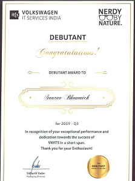
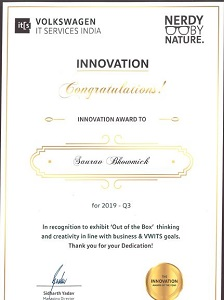
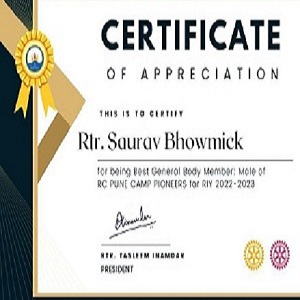
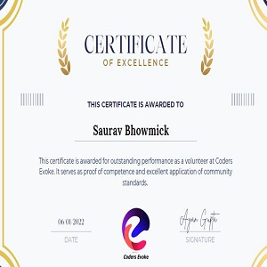
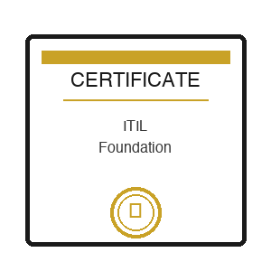
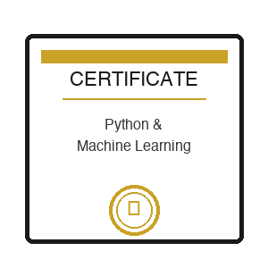

During my time at Volkswagen Group Technology Solutions India Pvt. Ltd., I received a Recognition Award for exceptional performance delivered within a notably short timeframe. This achievement highlighted my ability to quickly adapt and contribute meaningfully to company initiatives. Throughout this period, I consistently met all established Key Performance Indicators (KPIs), demonstrating my commitment to quality, efficiency, and project goals. This recognition validated my technical skills and dedication to excellence in a fast-paced corporate environment.
View Certificate
During my tenure at Volkswagen Group Technology Solutions India Pvt. Ltd., I was honored with a Recognition Award that celebrated my "Out of the Box" thinking and creativity aligned with business and company objectives. This recognition acknowledged my innovative approach to problem-solving and ability to generate fresh ideas that supported organizational goals. Most notably, I successfully automated previously manual tasks, implementing solutions that reduced operational efforts by 20%. This automation initiative not only improved efficiency but also allowed team members to redirect their focus toward more strategic activities, demonstrating the tangible business value of creative thinking applied to practical challenges.
View Certificate
During my time with the Rotaract Club of Pune Camp Pioneers, I was presented with a Recognition Award acknowledging my active participation across all club events. The organization specifically highlighted my exceptional punctuality, recognizing me as a consistently reliable member who could be counted on to attend and contribute to activities in a timely manner. This recognition reflected my commitment to the club's mission and my dedication to being a dependable team member who valued both the organization's time and the impact of our community service initiatives.
View Certificate
During my time as a volunteer content writer at Coders Evoke, I was honored to receive the "Outstanding Volunteer" award in recognition of my exceptional contributions to the organization's communications efforts. This distinction acknowledged my ability to craft compelling, impactful content that effectively communicated the organization's mission and initiatives to diverse audiences. Through my writing, I helped raise awareness about important causes, engage community members, and inspire action. My dedication to producing high-quality written materials consistently exceeded expectations, demonstrating both technical skill and a genuine passion for the organization's work. This recognition highlighted not only my writing abilities but also my commitment to using these skills to make a meaningful difference through volunteer service.
View Certificate
Achieved ITIL Foundation Level certification, demonstrating comprehensive understanding of IT Service Management best practices, processes, and frameworks. This certification validates knowledge in service lifecycle management, including service strategy, design, transition, operation, and continual service improvement.

Completed professional certifications in Python programming and Machine Learning, demonstrating proficiency in data analysis, algorithm implementation, and machine learning model development. These certifications validate expertise in modern data science tools and techniques essential for building intelligent systems.